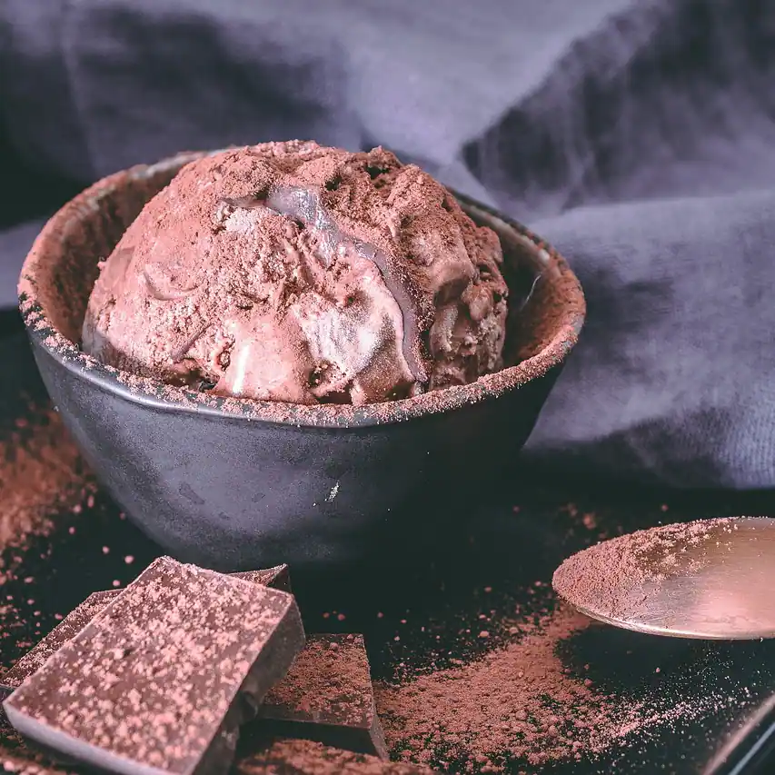
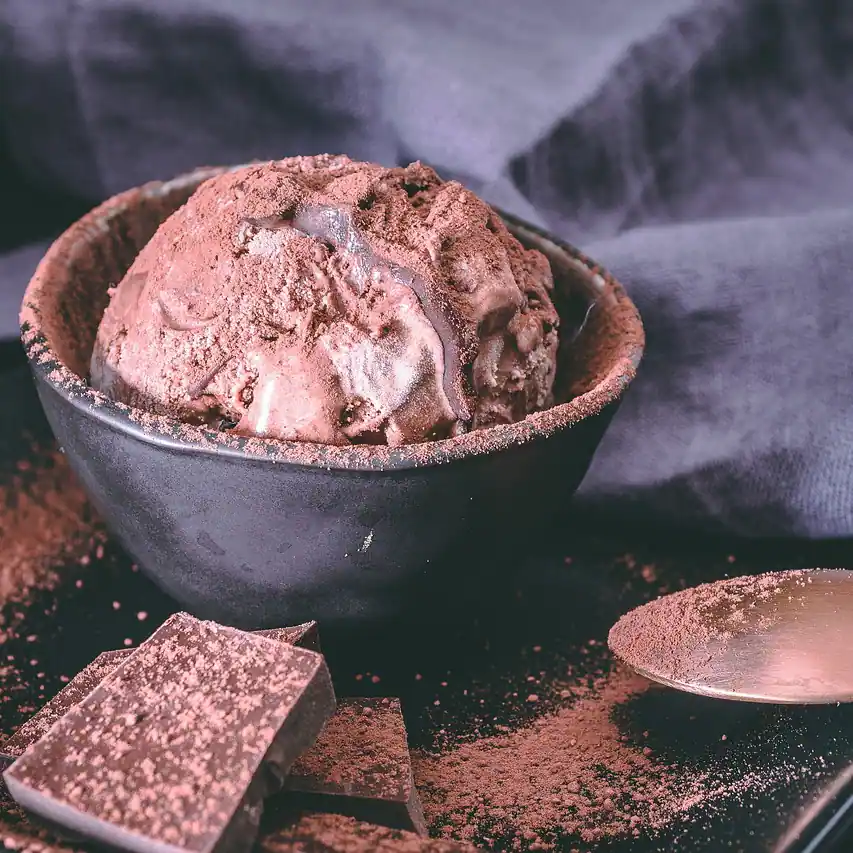

glass med vuxna smaker
OMDÖMEN
OM OSS
Grundaren till Gelato Amaro heter Anna Bianchi, en nyfiken individualist från Italien.
Efter sin kockutbildning i Paris gjorde hon praktiskt taget en jorden runt-resa via
varierande studier och arbeten som 2017 slutade med ett brinnande intresse för glass
med smakinfluenser från hela världen.
Med sina erfarenheter i ryggen tog hon med sig
sina kreativa idéer in i köket för att med gräddglassen i fokus skapa, utveckla och
experimentera med spännande ingredienser av noga utvalda råvaror av högsta kvalitet
från världens alla hörn.
Resultatet blev Gelato Amaro, som sedan 2020 är en självklar
plats i Malmös kulturella och matmässiga mångfald där smakerna salt, surt och beskt
harmoniskt och unikt kombineras med sötman från grädde. Samtliga glassrecept är
otraditionellt lekfulla och överraskande nog avsedda för mer vuxna smaklökar.
Ett vinnande koncept, för du blir aldrig för gammal för att gilla glass!